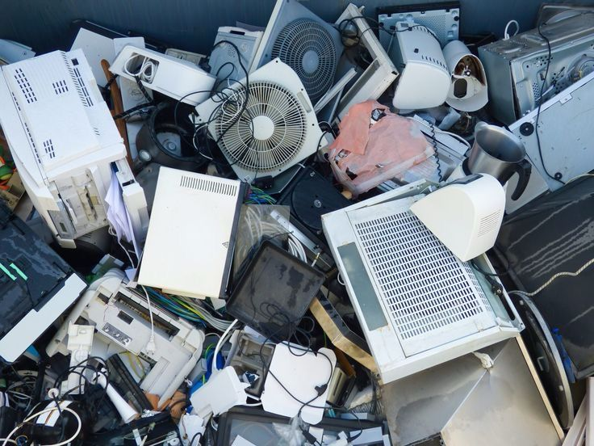
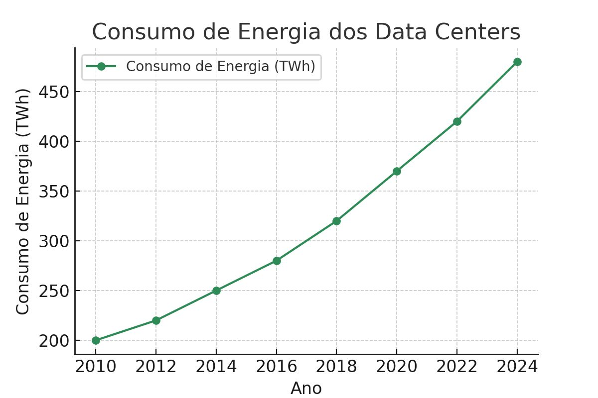
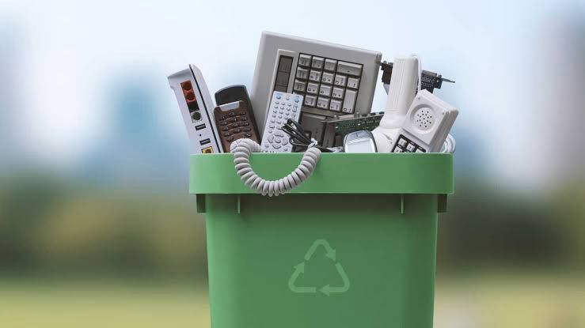
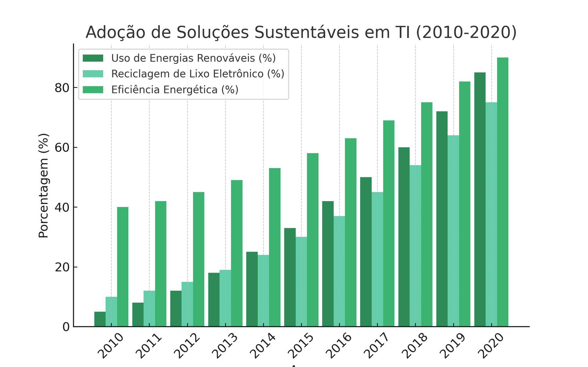

Informática e Meio Ambiente: Impactos e Soluções Sustentáveis
A relação entre a informática e o meio ambiente envolve tanto impactos negativos quanto soluções sustentáveis. Enquanto o lixo eletrônico e o alto consumo de energia são problemas, a tecnologia também possibilita o uso de energia limpa e a reciclagem de dispositivos.
Impactos Ambientais da Tecnologia
1. Lixo Eletrônico (E-Waste)
Com o rápido avanço tecnológico, milhões de toneladas de lixo eletrônico são geradas anualmente. O descarte inadequado pode contaminar o solo e a água com metais pesados.
2. Consumo de Energia em Data Centers
Data centers são grandes consumidores de energia. Muitos ainda dependem de fontes não renováveis, aumentando as emissões de gases de efeito estufa.
Os gráficos mostram o aumento contínuo do consumo de energia pelos data centers ao longo dos anos, passando de aproximadamente 200 TWh em 2010 para mais de 450 TWh especificados para 2024. Esse crescimento reflete a crescente demanda por serviços digitais, como armazenamento em nuvem, big data e inteligência artificial, e evidência a necessidade urgente de adoção mais eficiente para prejuízo o impacto ambiental.
1. Energia Limpa para Data Centers
Empresas como Google e Microsoft estão investindo em fontes de energia renovável para reduzir o impacto ambiental.
2. Reciclagem de Dispositivos Eletrônicos
Programas de reciclagem ajudam a reutilizar materiais como ouro, prata e cobre, reduzindo a extração de recursos naturais.
3. Economia Circular
A reutilização e o recondicionamento de dispositivos prolongam sua vida útil e diminuem o desperdício.
4. Sensores Inteligentes e IoT
Dispositivos inteligentes monitoram o consumo de recursos e ajudam a reduzir desperdícios.
Adoção de Soluções Sustentáveis em TI (2010-2020)
O gráfico destaca a evolução de três importantes iniciativas sustentáveis no setor de TI: o uso de energias renováveis, a reciclagem de lixo eletrônico e a eficiência energética. Entre 2010 e 2020, observa-se um aumento significativo em todas essas práticas, com destaque para o uso de fontes renováveis, que ultrapassou 80% ao final do período. Essa tendência reflete o esforço crescente das empresas de TI para reduzir sua pegada ambiental, melhorar o gerenciamento de resíduos eletrônicos e adotar tecnologias energeticamente eficientes.
O que é Computação Verde?
Computação Verde (Green IT) refere-se ao uso sustentável da tecnologia para reduzir impactos ambientais. Algumas práticas incluem:
- ✅ Uso eficiente de energia: Dispositivos com certificação Energy Star consomem menos eletricidade.
- ✅ Computação em nuvem: Uso compartilhado de servidores reduz desperdício energético.
- ✅ Reciclagem de hardware: Reaproveita metais preciosos e evita o descarte inadequado.
Pegada de Carbono da Internet
A internet pode parecer inofensiva, mas seu impacto ambiental é enorme. Veja alguns dados:
- 📌 O setor de tecnologia representa 3,7% das emissões globais de CO₂, equivalente à aviação.
- 📌 O streaming de vídeos gera mais de 1% das emissões globais de carbono.
- 📌 Um e-mail com anexos pode liberar até 50g de CO₂.
Empresas que Adotam Práticas Sustentáveis
Algumas gigantes da tecnologia já estão tomando medidas para reduzir seu impacto ambiental:
- 🌱 Google: Usa energia 100% renovável em seus data centers.
- 🌱 Microsoft: Promete ser carbono negativa até 2030.
- 🌱 Apple: Produz dispositivos com materiais reciclados.
Como Você Pode Ajudar?
Pequenas ações fazem grande diferença! Veja como você pode contribuir:
- 💡 Desligue dispositivos quando não estiverem em uso.
- 💡 Evite impressões desnecessárias e utilize documentos digitais.
- 💡 Recicle eletrônicos antigos em pontos de coleta especializados.
- 💡 Prefira empresas sustentáveis na hora de comprar produtos tecnológicos.
Conclusão
A tecnologia pode ser uma grande aliada na construção de um futuro sustentável, desde que seja utilizada de maneira consciente e responsável. A adoção de práticas como o uso de fontes de energia renováveis, o descarte adequado de eletrônicos e a otimização do consumo digital pode reduzir significativamente os impactos ambientais causados pelo setor tecnológico. À medida que empresas e indivíduos incorporem soluções sustentáveis, é possível equilibrar inovação e preservação ambiental. A tecnologia não precisa ser uma ameaça ao meio ambiente – pelo contrário, pode ser uma chave para protegê-lo e garantir um planeta mais
Site feito por Erick da Silva , Lara Raissa Vieira , Giovanna Victoria , Gizelly Monteiro , Adriel Lima